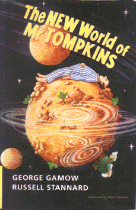

The New World of Mr. Tompkinsby George Gamow and Russell Stannard
publisher: Cambridge University Press
Fiction (?), 248 pages | 
(book cover art, Copyright ©1999 Michael Edwards)
Used with Permission. |
Return to the Book MenuPrevious|Next
Description:
Mr. Tompkins is a mild-mannered bank clerk who goes on a series of dream-like explorations into worlds where the laws of extreme physics have been greatly exaggerated. Guided by "the professor" and his lovely daughter, Maud, Mr. Tompkins makes a number of unusual discoveries....
Recommended for: students interested in "extreme" physics; people who want to learn about newer physics theories; people interested in true, mind-bending ideas; people who fall asleep in physics lectures and dream about strange worlds!
Did-you-read questions:
Deadline: February 1, 2005.
These should be easy questions, but you should have the questions ready and keep an eye out during your reading. Each question should be answered with 1-2 sentences.
Note: these questions are not probably not the most important part of the book! Your essay will not have to cover these questions!
- Who is wrongly accused of murder?
- What animal does Mr. Tompkins unwisely say he wants to ride through the quantum jungle?
- What is Mr. Tompkins' first name?
- Which Disney character does Lord Rutherford remind Mr. Tompkins of?
- What is Maud possibly going to do for the accelerator's visitor center?
Report Questions:Deadline: Peer Review Session on February 8, 2005; paper due February 10, 2005.
You should write a 3 - 4 page essay on one of the following questions. Your essay should include examples and references to the book, unless otherwise specified. Page number references are sufficient for citing material from the primary book. If you use outside materials, cite your sources in full. If you would rather write on a different topic, you may, but clear it with Mr. Howe or Ms. Sullivan first.
- The authors are certainly trying to make some confusing material accessable. Do you think they were successful? Use examples from the book to make your case.
- Are there aspects of this book that expanded your understanding (or confusion) about things you thought you knew already? Explain.
- What do you think about the story of the book? Does it contribute to the book's readability or merely distract from the material? Justify your answer.
- Mr. Stannard mentions in his preface that he wanted to bring Maud's character up to date. Do you think he did a good job? Is Maud a fair reflection of a "Maud-ern" woman?
Graphic and Presentation:
Deadline: February 21 - March 3, 2005.You will give a 10 minute presentation on both of the following:
- Convince your peers that they should (or should not) read this book. (This may include a brief summary of the book.) Give examples of what was cool or worthwhile in the book, and what you got out of it (or didn't).
- Describe a (realistic) science idea that you learned about in this book, citing information from at least 2 external sources (other than the dictionary). If you would like help choosing or understanding an idea from your book, you are invited to come talk to Mr. Howe or Ms. Sullivan.
Note: This presentation should not be just a reading of your paper!Along with this presentation, you should have a graphic that will go with it. A Power Point presentation is recommended, but if you have a special idea for a something else, such as a model, an original video presentation, or a well done drawing/ painting/ sculpture/ etc., you may do so, provided it involves a similar level of effort and polish. Speak to Mr. Howe or Ms. Sullivan first if you are considering an alternate graphic format to the Power Point.
Return to the Book MenuPrevious|Next